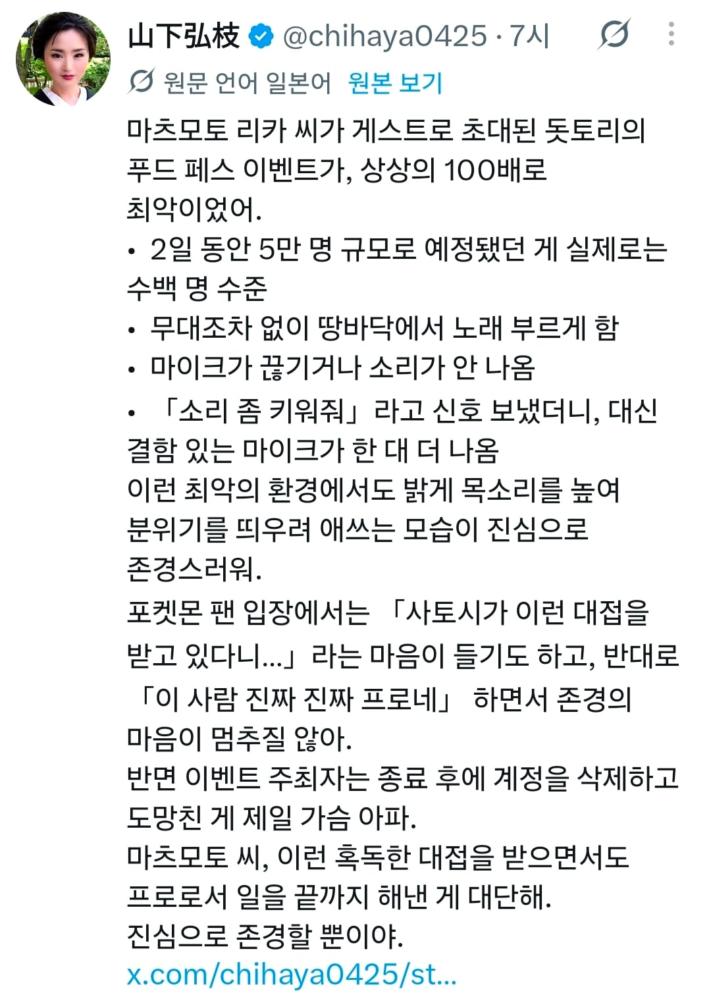

포켓몬스터 애니메이션에서 한지우(사토시)의 성우로 유명한 마츠모토 리카
대형 행사랍시고 갔더니 수 백명 정도만 온 작은 규모에 공연을 할 스테이지조차 없는 열악한 행사였지만
그럼에도 열심히 공연을 했다는 점에서 일본인들의 칭찬 세례가 쏟아지는 중
종종 지방의 작은 행사에서 대충 하고 가는 유명인들의 사례들 때문인지 더더욱 칭찬 받는듯

포켓몬스터 애니메이션에서 한지우(사토시)의 성우로 유명한 마츠모토 리카
대형 행사랍시고 갔더니 수 백명 정도만 온 작은 규모에 공연을 할 스테이지조차 없는 열악한 행사였지만
그럼에도 열심히 공연을 했다는 점에서 일본인들의 칭찬 세례가 쏟아지는 중
종종 지방의 작은 행사에서 대충 하고 가는 유명인들의 사례들 때문인지 더더욱 칭찬 받는듯
최근 인스타에서 어떤 단체가
"앞으로 이런 행사면 부르지 마세요" 라고 적은걸 봤는데
이 글을 보니 느낌이 또 새롭네
그거 나도본거같긴한데
자기들 몸값비싼데 나랏돈으로 불러놓고 이런거 아닌거같다 이런 뉘앙스아니었나? 정확히는 모르겠네
이 사람은 찐가수이기도 해서
이게 프로지 멋지다
김장훈인줄
멋진 분이시네
그래도 돈은 제대로 받았겠지?